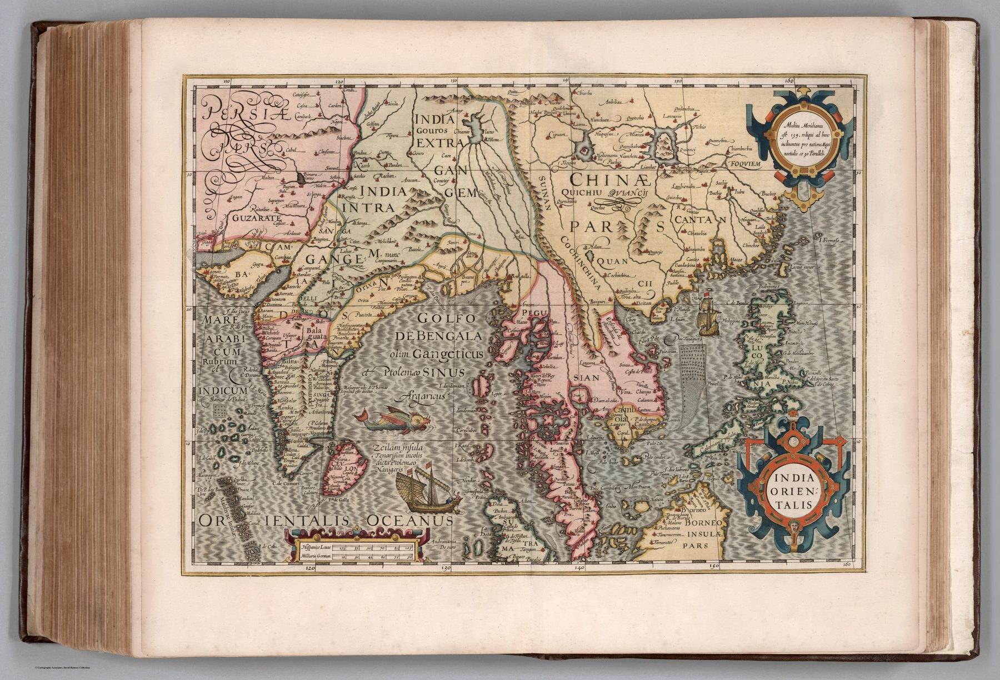

An atlas lineage
Gerard Mercator’s plates passed after his death to Jodocus Hondius and then into the publishing enterprise of Henricus Hondius. The 1623 Latin atlas was the first edition to place Henricus’s name on the title page. This map belongs to that inherited and continually reissued corpus.
Established rather than newly surveyed
The plate extends from India through mainland Southeast Asia toward China. Its authority comes from the Mercator–Hondius house and from repeated publication. Decorative cartouches and carefully engraved coastlines give coherence to information accumulated over earlier decades.
Amsterdam and Asian commerce
By 1623 Amsterdam had become a principal centre of European map publishing, while the Dutch East India Company had established an extensive Asian commercial network. Its market and its confidence belong to the same commercial environment.
On the sheet
The peninsula is lettered DECAN down its length, with Balaguata – the country above the Ghats – beside it and the coasts named Malabar and Choromandel; Bisnagar is still inland, Goa and Calecut on the west, and Meliapor on the east ‘where St Thomas is said to be buried’. The Bay of Bengal is labelled three times over, Golfo de Bengala olim Gangeticus et Ptolemaeo Sinus Argaricus, the modern name with its two classical ones, and India intra Gangem and extra Gangem still head the mainland. A roundel at the upper right explains the projection – the central meridian is 135°, the others inclined to it in proportion to the equator and the thirtieth parallel – and the scale bar at the foot gives both Hispanicae leucae and Milliaria Germanica. The hand colour separates the kingdoms; the sea carries one ship and one sea-beast.
The gaze
Henricus Hondius put his name on the title page in 1623 and changed little on this plate. That was the point: the house sold continuity. A Company merchant and a stay-at-home scholar bought the same India, decades old in its sources, and its age read as reliability.
In the Deccan timeline